Calculate Desertification (MEDALUS)
The Mediterranean Desertification and Land Use (MEDALUS) is the name of a project supported by Europe to assess, model and understand the desertification phenomena that increasingly affect the Mediterranean area. It provides a satisfied result about land degradation vulnerability.
The MEDALUS approach identifies environmentally sensitive areas (ESAs) through the Environmentally Sensitive Area Index (ESAI). This index can be used to obtain an in-depth understanding of the parameters causing the desertification threat at a certain point. This approach is simple, robust, widely applicable, and acceptable to new indicators and parameters and can be adjusted to several level scales. , the method was used for the analysis of the main indicators identified to be driving forces of land degradation.
Note
Maintain the same area of interest for all computations within MEDALUS.
1. Soil Quality Index (SQI)
Soil is a crucial factor in evaluating the Environmental Sensitivity of an ecosystem, especially in the arid, semi-arid and dry sub-humid zones. Soil properties related to desertification and degradation phenomena affect two principal parameters: (i) water storage and retention capacity; (ii) erosion resistance.
The formula used to compute the SQI is as shown below:
SQI = (Parent material x Depth x Texture x Slope x Drainage x Rock Fragments)^1/6
Default datasets used for sqi are as shown below:
Indicator |
Variables |
Data Source |
|---|---|---|
Soil Quality Index |
Slope |
|
Soil Depth |
Custom User Input |
|
Rock Fragments |
||
Parent Material |
||
Drainage |
||
Soil Texture |
Soil Quality Index can be calculated in two ways:
Using default data (Computed on Google Earth Engine)
Using Custom data (Computed locally on device)
a. Using default data (Computed on Google Earth Engine)
Inorder to compute Soil Quality Index using default data use the following steps.
First open the calculate indicators toolbox and select MEDALUS then select the Soil Quality Index option as shown.
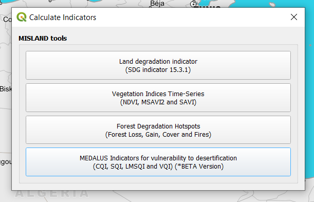 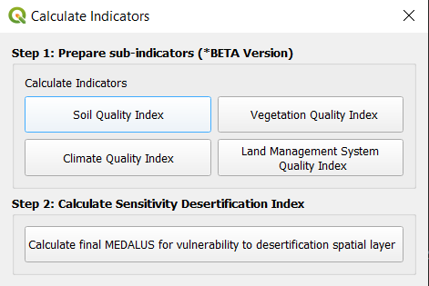Input soil depth (cm) and edit soil texture aggregation method according to case study as shown. This will reclassify soil depth values according to the definition selected.
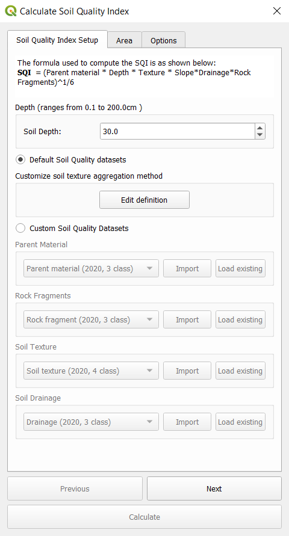
Proceed to select an area of interest and run the computation.
b. Using Custom data (Computed locally on device)
This step requires the data to be available locally.
Raw Data Download
Inorder to prepare local data, Harmonized World Soil Database
Extracting Soil Drainage, Soil Texture and Rock Fragment Layers from HWSD DATA
To extract the drainage, texture and soil group variables from the HWSD data follow these simple steps:
Open the HWSD data table on Microsoft Access. The variable to be extracted are D DRAINAGE(code), D USDA TEX CLASS(code), and T GRAVEL. To initiate the extraction, create a query design in the ‘show table’ dialogue that pops up select HWSD DATA, D DRAINAGE and D USDA TEX CLASS tables.
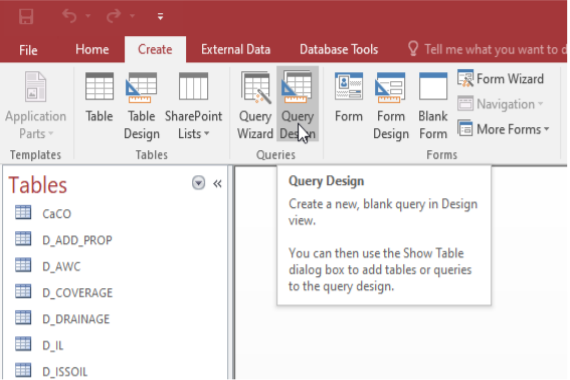In the ‘show table’ dialogue that pops up select HWSD DATA, D DRAINAGE and D USDA TEX CLASS tables
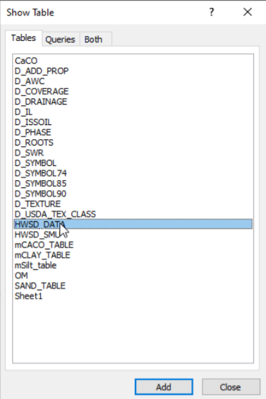From the HWSD DATA select the MU GLOBAL and T GRAVEL variables. From the D DRAINAGE and D USDA TEX CLASS tables select the CODE variable. The resulting query design should have the Fields row populated with the selected variables for their respective table on the Table row

Click run and the resulting table should have 4 columns populated with data from the selected variables


Export the table to MS Excel under the ’External Data’ tab as shown below. On the dialogue that pops up, give the export table an appropriate name and select ’Excel 97 - Excel 2003 Workbook’ as the export file format
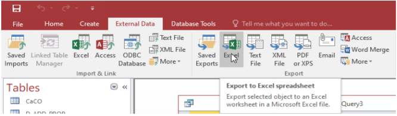
In MS Excel, open the just exported sheet and in separate sheets copy the MU Global field alongside the 3 variables of interest (Drainage, Gravel, Texture class); Paste the variables separately as shown below to facilitate joining them to the raster dataset in Q-GIS software.
 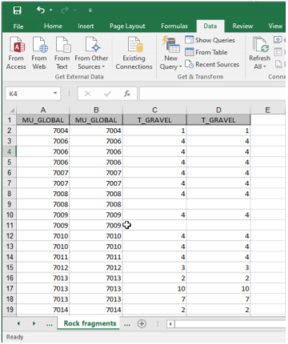
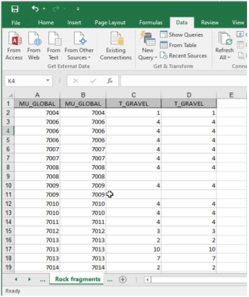
For each of the newly created sheets, copy the tables in MS Excel and paste to MS Access
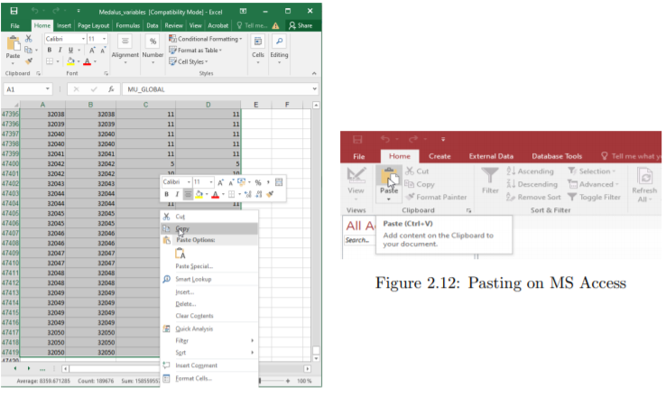
Under the Export data tab, select the Export to text file option as shown below.

On the Export text wizard that pops us set the export text as delimited text by checking the Delimited options then click next.
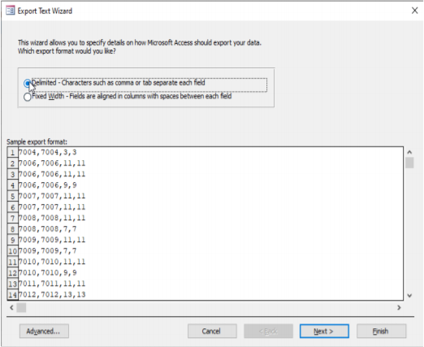
9. On the Export text wizard that pops us set the export text as delimited text by checking the Delimited options fig. 2.15 then click next.

Click on next to finish the export. Repeat steps 6 to 9 for all the other remaining variables and save the text files. The text files are used to assign pixel values to the HWSD.bil raster in Q-GIS.
Open the HWSD.bil raster file on Qgis together with the vector data for the OSS North Africa States in Q-GIS

Under the raster tab on the Q-GIS menu bar navigate to ‘Extraction’ > ‘Extract by Mask Layer’
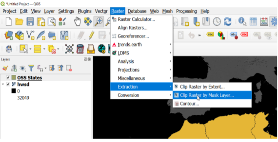
In the Clip Raster by Mask Layer dialogue box, select hwsd raster as the input layer and
the Vector layer as your Mask Layer. Save the output with the desired name to your desired location.

The clipped raster should is as shown below:

On the Q-GIS Menu bar, click on Processing and select the toolbox (or use keyboard shortcut Ctrl+Alt+T) to
open the processing toolbox.
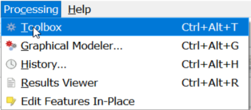
On the processing toolbox, search for the GRASS-GIS r.recode tool
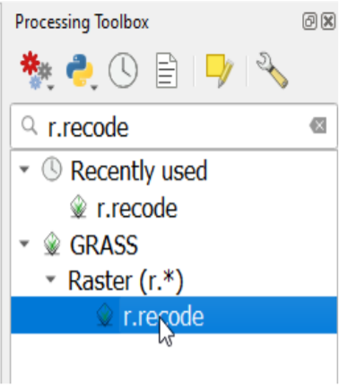
On the r.recode dialogue, select the clipped HWSD data as the input layer and the .txt
file previously prepared as the file containing the recode rules(for this example we will use the rock fragment). Save the output to your desired location and click run.

Using the HWSD cliped raster as input layer, repeat the step 14 and 15 with the appropriate recoding rules to extract the remaining variables and save the outputs for the other datasets.

Compute Soil Quality Index
First Input soil depth (cm) then Select Custom soil quality datasets instead of default and import sqi datasets as below.
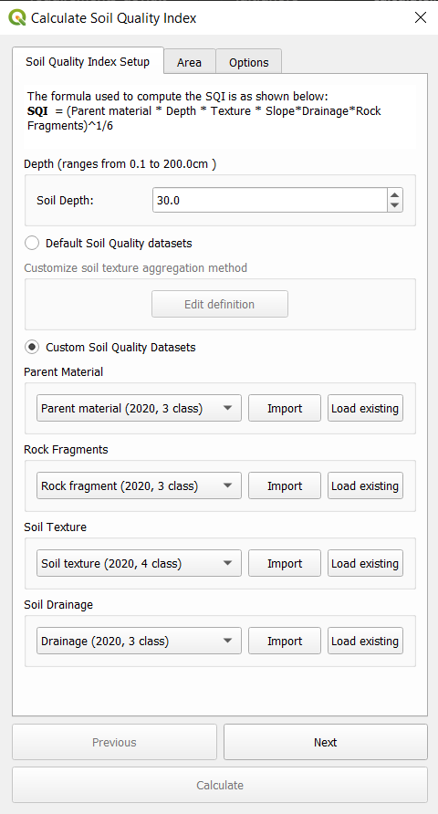Select import and select a raster or vector dataset of interest. Select the band number for the raster dataset. Input the aggregation definition, study year and the reclassified output destination file as shown:

Ensure to reclassifiy values correctly according to case study. Once all 4 datasets are imported proceed to select an area of interest and run the computation. You will be required to select a destination for your output file.
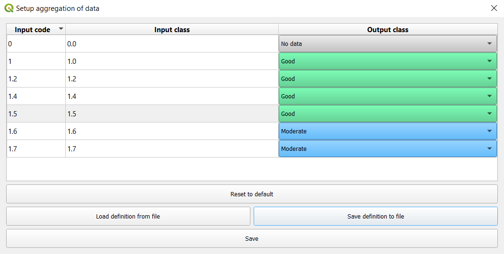2. Vegetation Quality Index (VQI)
The Vegetation Quality index is derived as the geometric mean of the characteristics of the vegetation. Fire Hazard layers (RI), Fire Resistance (FR), drought (RS), vegetation erosion protection (PE) and cover plant (CV) according to the following formula:
VQI = (RI x PE x RS x CV) ^ ¼
Default datasets used for vqi are as shown below:
Indicator |
Variables |
Data Source |
|---|---|---|
Vegetation Quality Index |
Fire Risk |
|
Drought Resistance |
||
Erosion Protection |
||
Plant Cover |
To compute vegetation quality index, select Vegetation Quality Index option under the MEDALUS toolbar. For each of the 3 datasets, i.e - Fire Risk - Drought Resistance - Erosion Protection
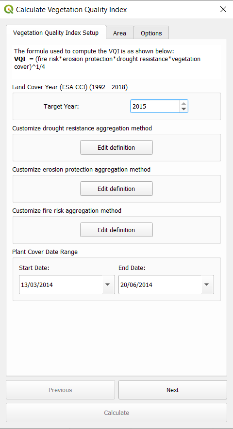Select the land cover year and an aggregation definition or use default set aggregation. This will reclassify land cover classes based on definition provided.
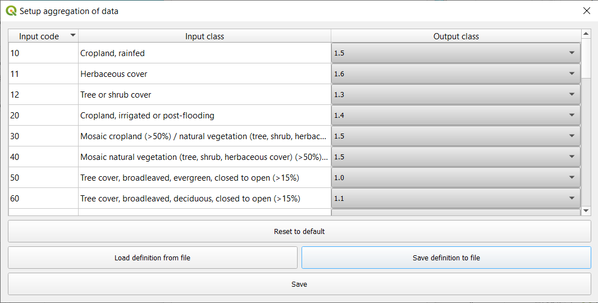For Plant cover, select a start and end date. Proceed to select an area of interest and run the computation.
3. Climate Quality Index (CQI)
Climate quality is assessed on the basis of how it influences water availability to the plants. The climate quality index, according to the MEDALUS approach, is obtained by cross-referencing the three layers of information namely precipitation and aridity index using the following equation:
CQI = (precipitation x aridity index) ^ 1/2
Default datasets used for CQI are:
Indicator |
Variables |
Data Source |
|---|---|---|
Climate Quality Index |
Precipitation |
TerraClimate Monthly Climate and Climatic Water Balance for Global Terrestrial Surfaces |
Potential Evapotranspiration |
TerraClimate Monthly Climate and Climatic Water Balance for Global Terrestrial Surfaces |
Climate Quality Index can be calculated in two ways:
Using default data (Computed on Google Earth Engine)
Using Custom data (Computed locally on device)
a. Using default data (Computed on Google Earth Engine)
Select a year of study between 1979-2020. Proceed to select and area of interest and run the computation.

b. Using Custom data (Computed locally on device)
This step requires the data to be available locally. Load both a potential evapotranspiration and precipitation dataset to the plugin as shown below.
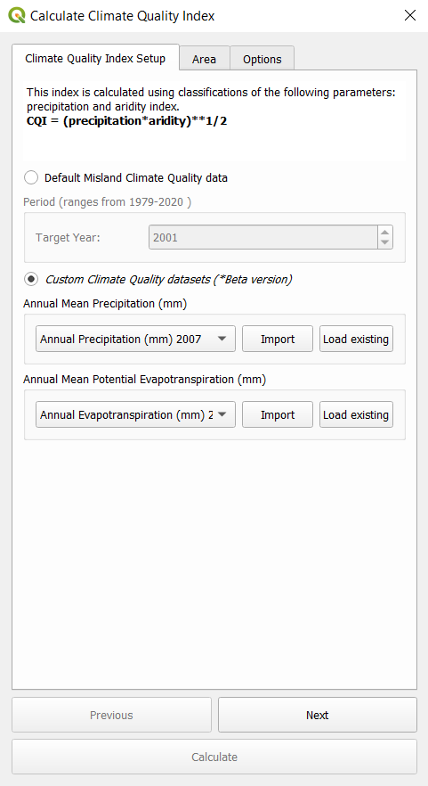Proceed to select an area of interest and run the computation. You will be required to select a destination for your output file.
4. Management Quality Index (MQI)
The Management quality index, according to the MEDALUS approach, is obtained by cross-referencing the two layers of information namely Land-Use intensity (LU) and Population Density (PD) using the following equation:
MQI = (LU X PD)^1/2
Default datasets used for MQI are:
Indicator |
Variables |
Data Source |
|---|---|---|
Management Quality Index |
Land Use Intensity |
|
Population Density |
GPWv411: Population Density (Gridded Population of the World Version 4.11) |
To compute vegetation quality index, select Management Quality Index option under the MEDALUS toolbar. Select the land cover year an and set aggregation definition for Land Use Intensity. This will reclassify land cover classes based on definition provided.
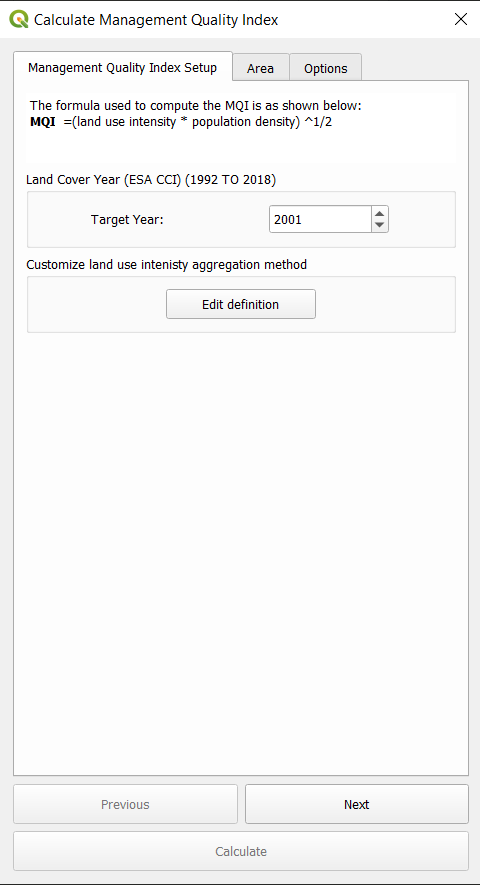 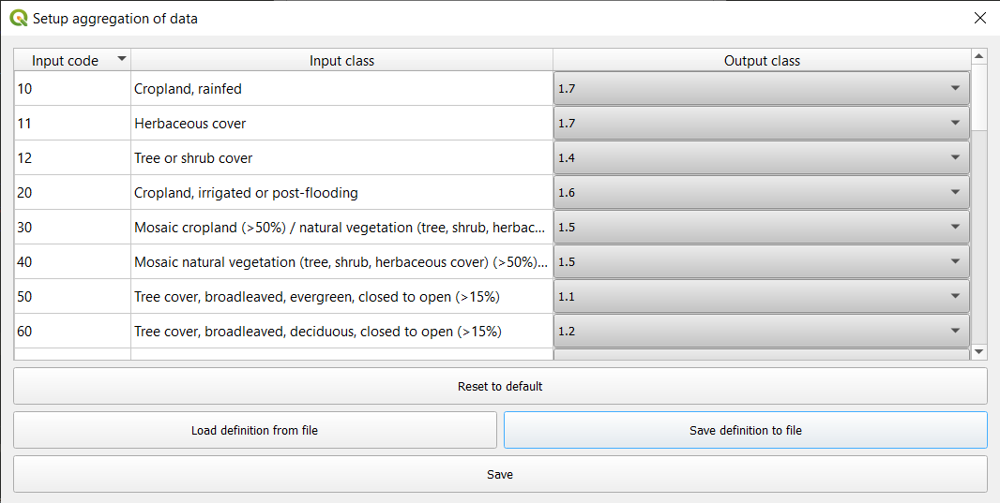Proceed to select an area of interest and run the computation. You will be required to select a destination for your output file.
Environmentally sensitive area (ESA) Index (Combined Desertification Layer)
The environmentally sensitive area (ESA) index (ESAI) is computed according to the original procedure as a geometric mean of the four quality values recorded at each location (i.e., in each elementary pixel; Equation 2):
ESAI = (SQI x VQI x CQI x MQI) ^ 1/4
To compute the final desertification layer all MEDALUS subindicator must be already computed i.e SQI, VQI, CQI, MQI. In the MEDALUS toolbox select Calculate final MEDALUS option as shown below:
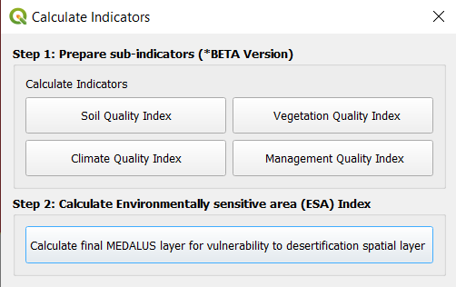Load all 4 layers to the plugin, select the area of interest and compute the ESAI. You will be required to select a destination for your output file.
Note
All layers will be automatically loaded into the plugin if they are available and loaded within QGIS.